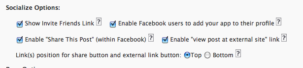
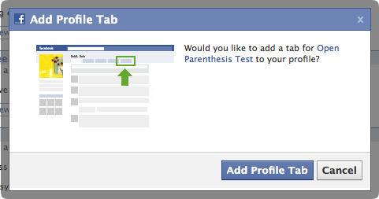
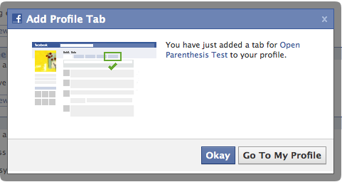
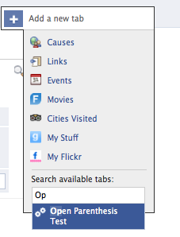

Back to instructions.
Step Two: Add to Profile / Tabs
WPBook enables users to add profile boxes to their personal profiles. It also allows for the addition of tabs to both individual profiles (yours or any of your application's users) and Facebook Pages.
A. Add to Individual Profile
In your WPBook settings in WordPress, under the "Socialize Options" section, ensure that you've checked the "Enable Facebook users to add your app to their profile" checkbox.

Assuming that's enabled, and you've allowed for "Users" to install the app on the "Authentication" tab of the application settings in Facebook, adding to a user profile is quite simple.
Visit your application page (http://apps.facebook.com/openparenthesis/ but with your canvas page url after the facebook.com part), and you should see an "Add Profile Tab" button at the top of the page:
(You may or may not have an "Invite Friends" button depending on your settings).
Clicking on the "Add Profile Tab" button will create a Facebook style modal dialogue, asking you to confirm:

If the user confirms, the Facebook dialogue switches to a confirmation one:

Clicking on "Go to Profile" will then show your profile with the new tab added. Note the tab shows the name you provided on the Profiles tab of the Facebook settings for your application.
Note: Users can also add the Profile Tab simply by clicking the plus sign next to the existing tabs on their profile, and typing in the name of the application:

B. Add to Facebook Page
Ensure you've enabled both "Pages" and "User Profiles" in the "Authorization" tab of the Facebook settings. (See image in Step One).
Go to your Facebook application's "About" page. (The easiest way to find this is to go to the application itself, and click on the application name at the bottom where it says "Page built by").

Click on "Add to my page" in the left column, under the "Go to Application" box. (If that doesn't appear, you haven't enabled "Pages" in the Facebook Settings for your application - authorization tab - or you are not an admin of any pages.)

Facebook will ask you which pages you'd like to add the application to, presenting a list (which should include all the pages for which your are an admin):

Click the "Add to Page" button next to the page you'd like to add to. You won't likely see anything happen, though the page for which you clicked the button should disappear from the list. Click the "Close" button when you're done adding to pages.
(For each page you added the app to . . .) Go back to the page to which you added the app, and click on "edit page" in the left column under the page's logo. While looking at the page in edit view, find your application in the list of applications on that page. Click on the "edit" link associated with your application.

You should be taken to a page which thanks you for adding the app.
The act of adding the app should also have automatically added an application tab to your Page's profile. The tab name is taken from that supplied on the Profiles tab of the Facebook application settings.
If, for some reason, the tab has not been added - or if you've removed it and want to re-add it, you can simply use the plus sign icon to the right of your existing tabs, and type the name of the application (it helps if you've recently visited the application)
Up to Install Instructions | Back to Step 1: Basic Facebook Setup and Plugin Activation | On to Step 3: Publishing to Wall(s)